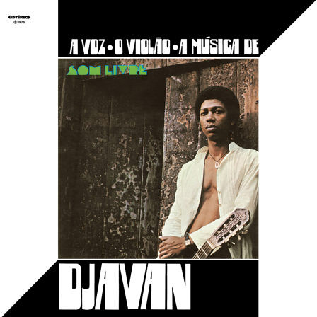

1976

" Lançado em 1976 pela Som Livre, A Voz, o Violão, a Música de Djavan é uma das estreias mais marcantes e maduras da MPB. Aos 27 anos, o cantor e compositor alagoano apresentou ao país um universo sonoro próprio, unindo a riqueza dos ritmos nordestinos, a sofisticação da bossa nova e do jazz, e a força do samba.
O grande diferencial do álbum está na síncopa única do violão de Djavan — uma batida percussiva e harmônica inédita que parecia soar como uma banda inteira. Com produção de Aloysio de Oliveira e arranjos de mestres como Dori Caymmi e Edson Frederico, o disco equilibrou a essência crua do violão com arranjos elegantes de cordas e sopros.
Todas as 12 faixas são de autoria solo de Djavan, incluindo clássicos definitivos como "Flor de Lis", "Fato Consumado" e "Baile". O álbum revelou um compositor completo e abriu caminho definitivo para um dos maiores nomes da música popular brasileira
Álbum: A Voz, o Violão, a Música de Djavan
Duração: 3:45
Duração: 3:00
Duração: 2:10
Duração: 4:00
Duração: 3:06
Duração: 3:28
Duração: 3:15
Duração: 2:32
Duração: 3:18
Duração: 4:40
Duração: 3:40
Duração: 2:37